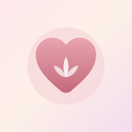

メンタルジム臨床心理学（ACT・セルフコンパッション・NVC）をベースにした、毎日使えるこころのトレーニングです。
記録はこの端末の中だけに保存されます。
ひとりで頑張るんじゃなく、伴走してほしいときに。
心理学の知識と、成功者たちが取り入れている行動パターンを組み合わせた個人セッションです。 「ちょっと聞いてみたい」くらいの気持ちで全然OK。オンライン（Zoom等）で対応しています。
完全オーダーメイドの個別伴走プログラム。現状と理想を丁寧にヒアリングし、今一番必要な心理学ワークを設計します。
通常価格 ¥180,000（税込¥198,000）
6回コースに申し込む →最近の気分やワークの記録をテキストでコピーできます。セッションで「最近どうだったか」を伝えるときにどうぞ。
ひとりで抱えずに、今すぐ話せる窓口があります。
このアプリはセルフケアを目的としたもので、医療行為や診断の代わりにはなりません。 記録はお使いの端末内にのみ保存され、外部に送信されることはありません。